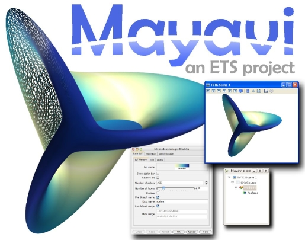
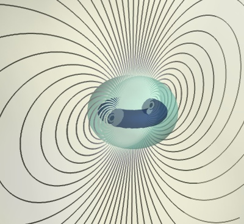
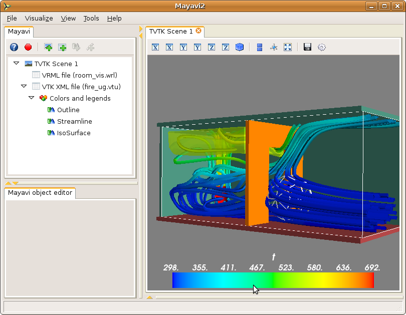
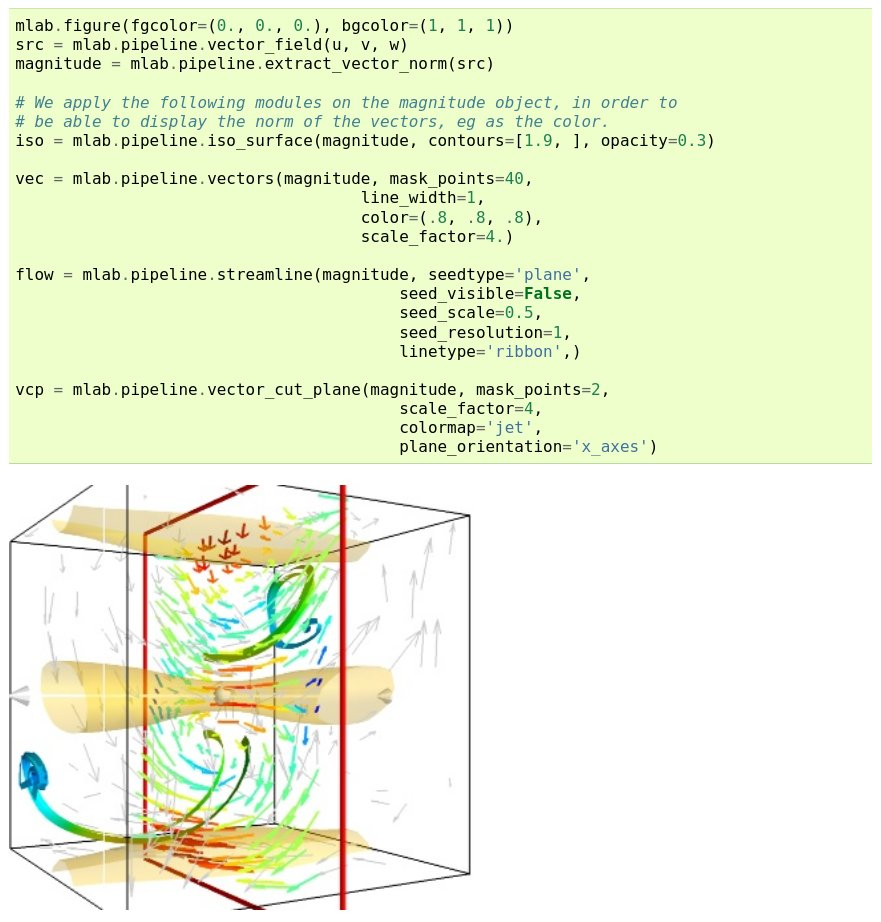
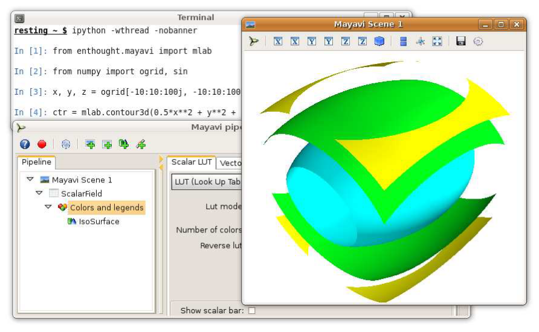
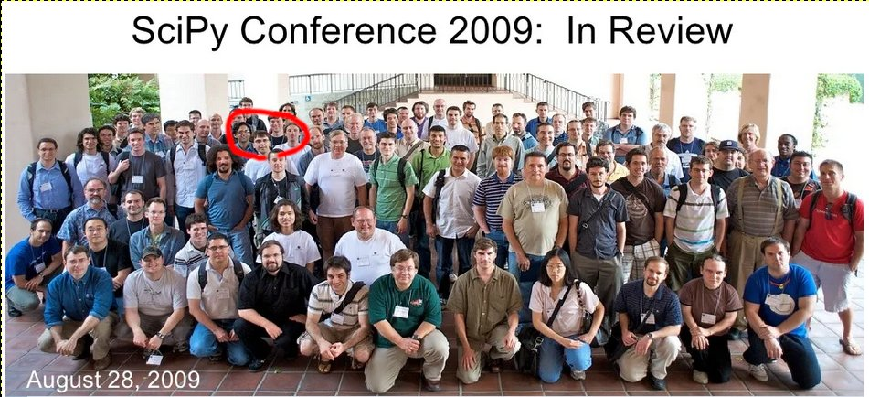

The Mayavi Python software, and my personal history: A thread on Python and scipy ecosystems, building open source codebase, and meeting really cool and friendly people
I am writing today as a goodbye to the project: I used to be one of the core contributors and maintainers but have been inactive for a while for lack of time. Out of common agreement, we recently removed my commit rights to limit security risks.
Mayavi brought my so much!
The start of my adventure with Mayavi
I got involved around 2007: I needed 3D visualization of magnetic fields as I was designing coils for my PhD [1].
| [1] | This led to an example in the Mayavi docs http://docs.enthought.com/mayavi/mayavi/auto/example_magnetic_field_lines.html |
I started as an early user of Mayavi2, a rewrite of Mayavi, and eventually joined Prabhu Ramachandran and Enthought as a contributor.
What is Mayavi?
Mayavi is a scientific 3D visualization library in Python.
It enables interactive visualization to understand complex information in 3D, such as multi-physics fields, combined with simple scripting to integrate in a broader scientific computing flow.
Mayavi was designed and founded around 2000 by Prabhu Ramachandran, a researcher in computational fluid dynamics at IIT Bombay and long-time open-source and Python figure.
The key idea was to make VTK, a powerful C++ visualization library, easily useful with a Python interface.
Mayavi bridged the gap between the C++ data structures, and efficient Python data structures, exposing without copies to numpy arrays.
It uses tools from Enthought (namely the entought tool suite) for an interactive GUI built on a Python object model: fully scriptable (the vision in explained in an article Prabhu and I wrote )

Mayavi is a full-blown interactive application

Mayavi is also a Python library, for full scripting
Working on Mayavi taught me code and communities

Mayavi used within an interactive IPython – an image from the Mayavi paper
I joined to help with the “mlab” interface, for even simpler Python scripting built upon functions. My goal was to make Mayavi natural to matlab and matplotlib users, a product vision which was probably important to push popularity even further.
I was an isolated PhD student in a physics lab, emboldened by a discussion with Fernando Perez, I started contributing and discussing with Prabhu Ramanchandran. I remember my first skype discussion with Prabhu, I was very intimidated.
Understanding this large codebase was hard! And yet, slowly but surely, I started making more and more meaningful contribution: on mlab, than on the broader codbase, fixing bugs, a lot of work on documentation and examples…

Prabhu and myself are in this scipy conference group picture! From https://slideshare.net/enthought/scientific-computing-with-python-webinar-august-28-2009
Then Enthought funded my overseas travel to the scipy conference: a big deal for me, as I was a peniless PhD student.
My Mayavi story is that of meeting amazing people in the Python, scipy, and pydata world; people who believe in building a tool stack to democratize scientific computing; people from all over the world, friendly, welcoming, passionate.
It founded my belief in communities.
This adventure led me to learn software engineering (Software carpentry really helped getting started) to work at Enthought (a software startup central to scientific computing in Python), to change career from physics to computing, join Inria (French national research in maths and computing), and I do other open source projects…
Mayavi was crucial to my personal adventure. Thank you Prabhu! Thank you Enthought! Thank you the Scipy community!!